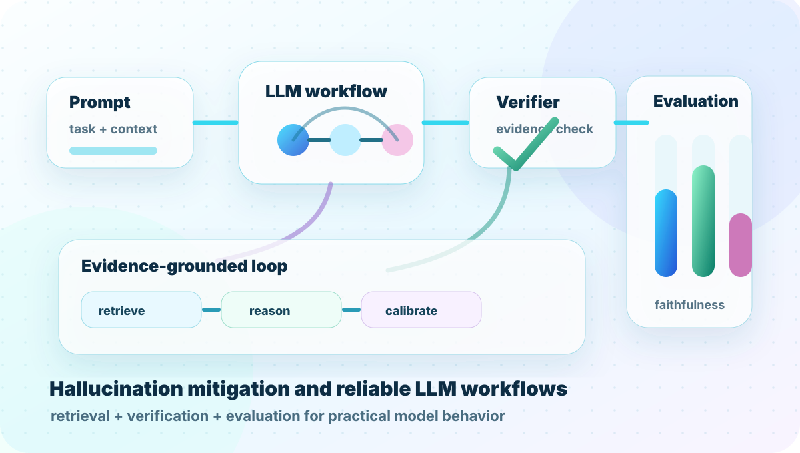
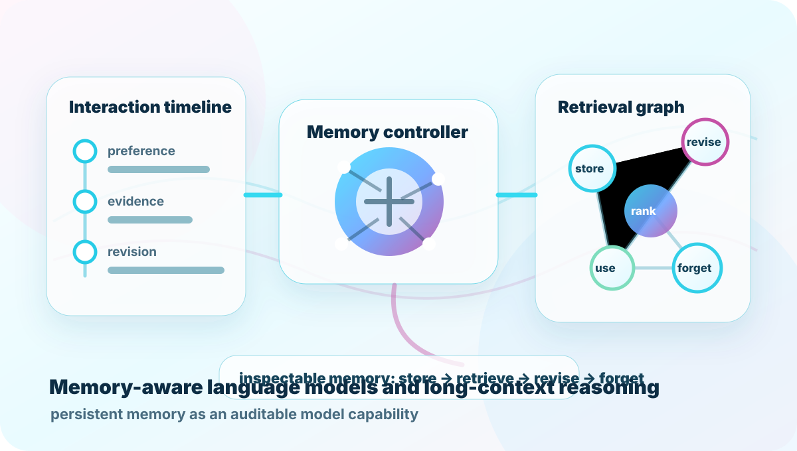
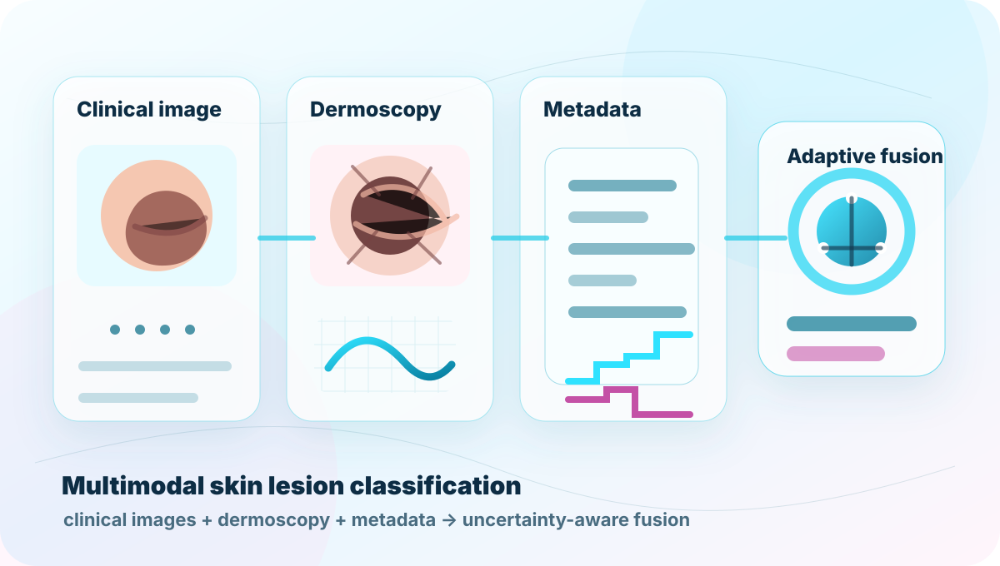

Research profile
AI researcher focused on LLM systems and efficient inference.
Research and engineering experience across SUTD, A*STAR collaboration, LLM reliability, model inference, and deployment-oriented systems.
LLM RESEARCH · INFERENCE SYSTEMS
Building capable models.
Making inference dependable.
I earned my B.Eng. in Artificial Intelligence from Southwest Jiaotong University (SWJTU) in 2023, conducted research as a Visiting Researcher at ISTD, SUTD, and worked as an Algorithm Engineer at LexinFintech in Shenzhen from June 2025 to August 2026.
Research and engineering experience across SUTD, A*STAR collaboration, LLM reliability, model inference, and deployment-oriented systems.
Three research tracks: efficient LLM inference, reliable model workflows, and memory-aware language models.
Exploring inference efficiency, serving behavior, and deployment-aware optimization for practical large language model systems.

Open-source exploration around full-loop LLM workflows, model behavior analysis, and methods for reducing hallucination in practical systems.

Research interest in how large language models store, retrieve, revise, and use memory across long interactions and knowledge-intensive workflows.
Peer-reviewed medical AI paper on multimodal skin lesion classification using clinical images, dermoscopy images, and metadata.
The work proposes an uncertainty-based hybrid fusion strategy for multimodal skin cancer diagnosis, combining image-level and metadata-level information for more adaptive classification.
@article{zuo2025multistage,
title = {A multi-stage multi-modal learning algorithm with adaptive multimodal fusion for improving multi-label skin lesion classification},
author = {Zuo, Lihan and Wang, Zizhou and Wang, Yan},
journal = {Artificial Intelligence in Medicine},
volume = {162},
pages = {103091},
year = {2025},
doi = {10.1016/j.artmed.2025.103091}
}

Experiment code for the AIIM 2025 paper on multi-stage multimodal skin lesion classification.

Working on the Multi-Modality Dementia Detection Model with members from SUTD and Icekredit. 🇸🇬
A structured academic timeline covering education, research experience, professional work, projects, and publication record.
Professional role focused on algorithm engineering, model development, and applied AI systems.
First-author paper: A multi-stage multi-modal learning algorithm with adaptive multimodal fusion for improving multi-label skin lesion classification.
Worked on large language models at SUTD and collaborated with scientists from A*STAR.
Applied multimodal AI project focused on dementia detection with cross-institution collaboration.
Worked on medical image analysis, leading into the multimodal skin lesion classification publication.
Undergraduate training in artificial intelligence, with foundations in machine learning, programming, and intelligent systems.